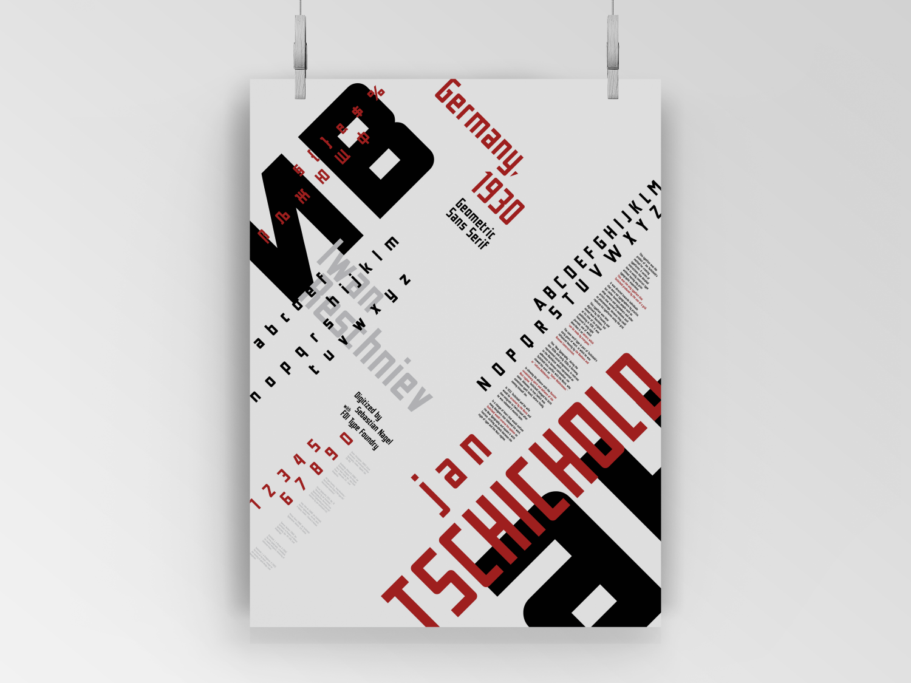
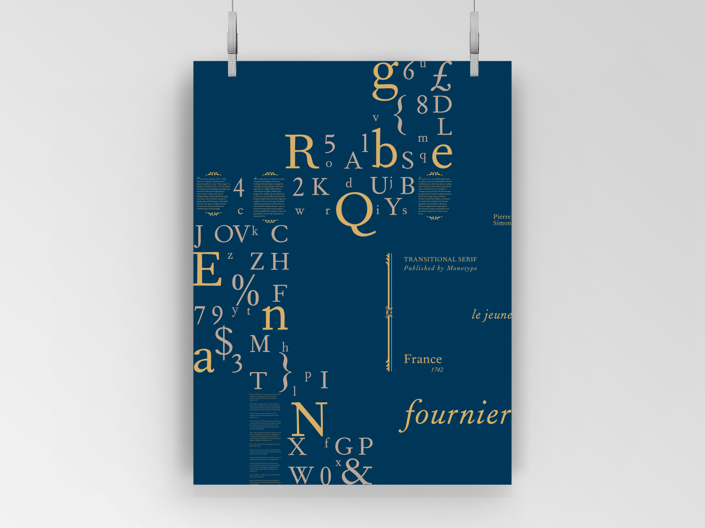
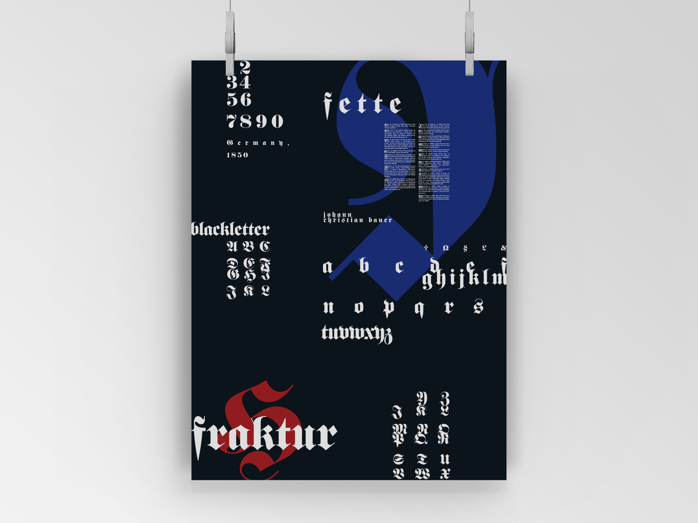

❮
❯
Fall 2019. | Typographic Posters.
These three posters are explorations of historical typefaces from separate categories of type and periods of history. This project involved research into the development of European type throughout the centuries and the historical context in which they arose. They are intended to be an investigation into how the past sensibilities of design correspond with the sensibilities of present.
The process was an exploration of negative space and typography.